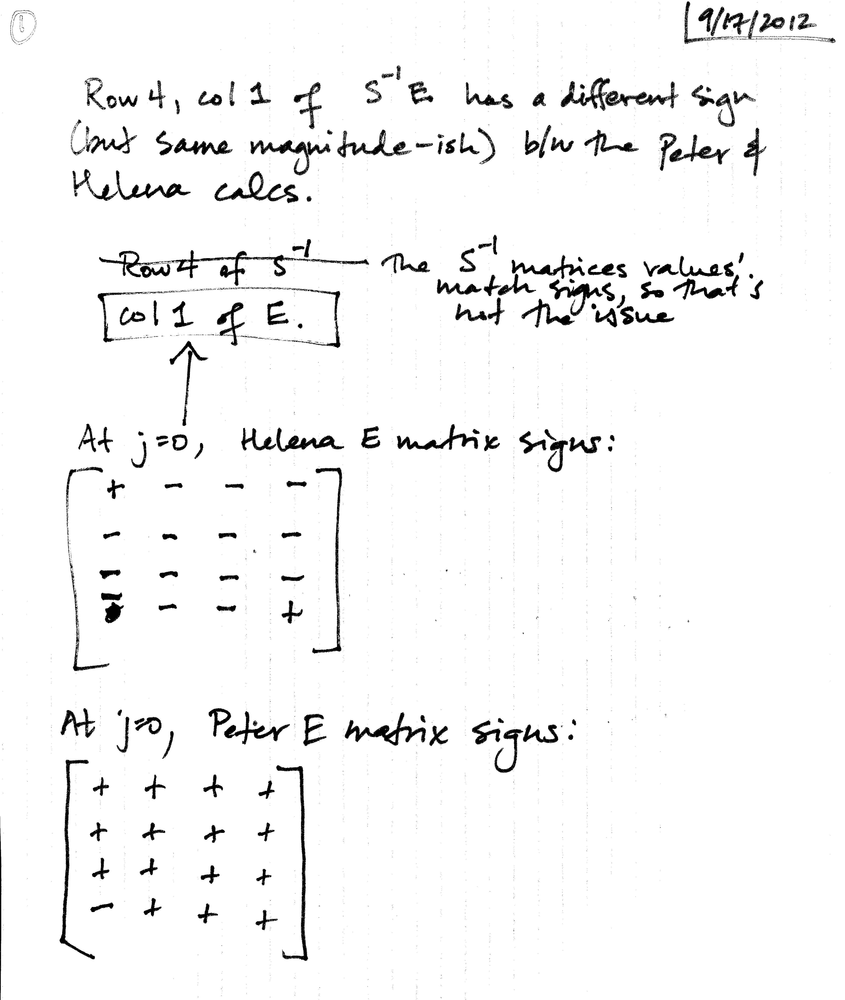
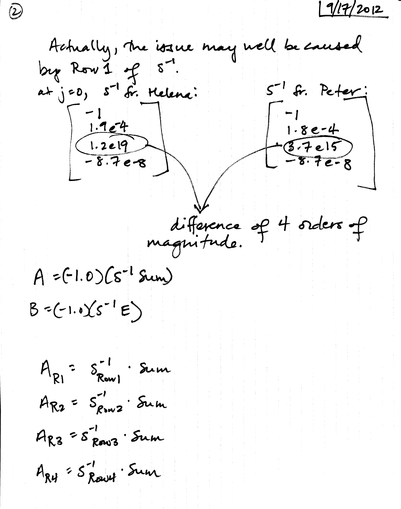
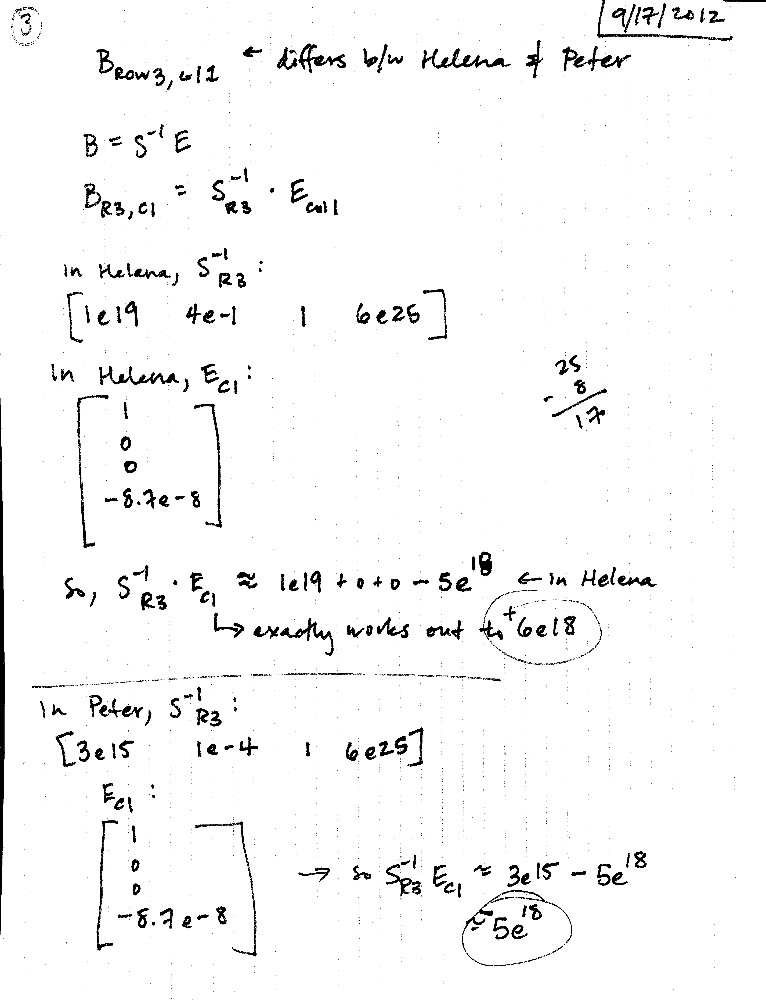
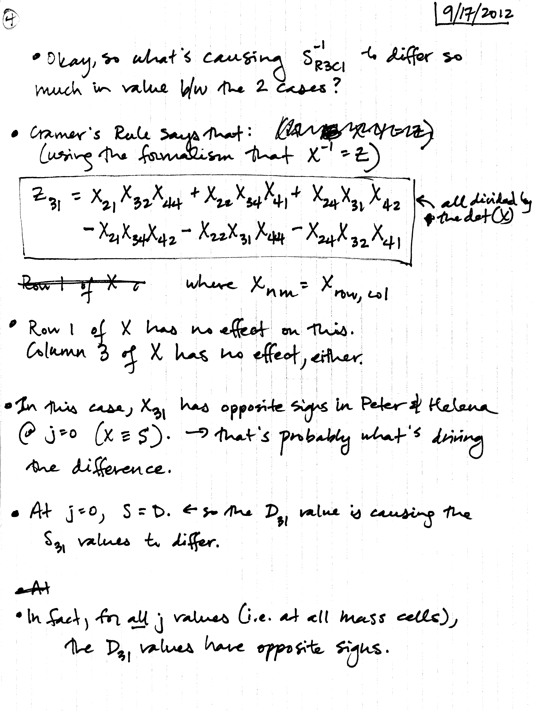
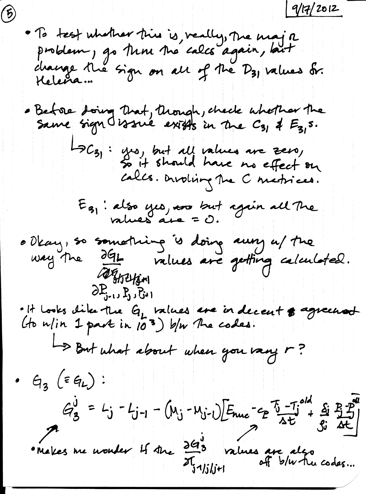

Date
& Time: Sept. 17, 2012
Location:
campus
Computing
context: MachoMac
(/Desktop/Research/CppHenyeyCode/src,
/Desktop/Research/BodenheimerCode/UnalteredCode)
From
last time:

Figure
1
Summary of the effect
that changing JUST the outermost A value(s) has on the resulting dX
profiles.
The top graphs in each
plot contains just the regular Helena and Peter dX profiles.
The middle graphs
compares the regular Peter dX profile with the Helena profile where
ONLY the outermost Helena A matrix values were set equal to the
outermost Peter A matrix values.
The bottom graphs
compare the regular Helena dX profile with the Peter profile where
ONLY the outermost Peter A matrix values were set equal to the
outermost Helena A matrix values.
Figure 1, above, shows
the effect that changing JUST the outermost A value(s) has on the
resulting dX profiles. The top graphs in each plot contains just the
regular Helena and Peter dX profiles. The middle graphs compares the
regular Peter dX profile with the Helena profile where ONLY the
outermost Helena A matrix values were set equal to the outermost
Peter A matrix values. The bottom graphs compare the regular Helena
dX profile with the Peter profile where ONLY the outermost Peter A
matrix values were set equal to the outermost Helena A matrix
values.
Except for the dL
profiles, changing JUST the outermost A matrix values goes a long
way towards getting the remainder of the dX profiles to agree with
each other. If you set the outermost Peter A matrix values to the
outermost Helena A matrix values, you end up with a more
'Helena-ish' set of dX profiles. Likewise, if you set the outermost
Helena A matrix values to the outermost Peter A matrix values, you
get a more 'Peter-ish' set of dX profiles. Except for the dL case,
the value of the outermost A matrix values (Helena or Peter)
largely determines whether the resulting dX profile will be more
'Peter-ish' or 'Helena-ish.'
The fact that
performing this outermost A-values switcheroo does NOT make the dX
profiles match perfectly, along with the dL profiles' resistance to
correction through this method, makes me think that the A values
that depend on the luminosity values (and derivatives thereof) may
play an important role in these calculations, too. To test this, I
looked at how the A values compare between the two codes, in for
ratio values that fall between 0 and 2. (The main place where the
ratio diverges from 1 is at the outer boundary, which the step
above corrects.) The results are plotted in Figure 2, below.

Figure
2
What Figure 2 shows
that the A values that depend on luminosity (and derivatives
thereof) systematically differ between the Peter- and
Helena-generated CDEG inputs. This is (at least partly) why
'fixing' the outermost A values, by setting them to their
Peter-values, does not fix the dL profile at all, and possibly also
why it doesn't entirely fix the other profiles.
To Do Today:
Start
by examining what happens to the dX profiles when you set the Helena
B matrix (row/col3) values to the Peter values, and whether/how much
of a difference it makes.
Check
the j=0 to jMax ('forward') calculations in the modifiedHenyey...
algorithm to see where the Helena and Peter-based CDEG values start
producing different (A/B/S/invS/Sum) results

Written
notes, p.1

Written
notes, p.2

Written
notes, p.3

Written
notes, p.4

Written
notes, p.5

Written
notes, p.6
To
keep in mind for later: